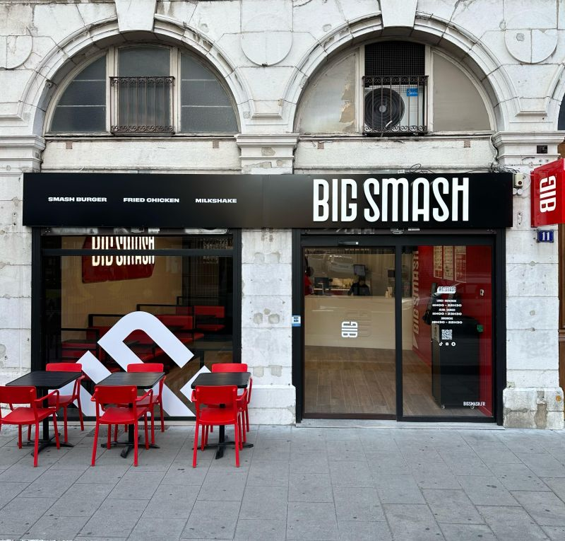

Mon Parcours Professionnel
Apprentie technicienne
Support utilisateurs en alternance — DEGECOM
Seyssinet-Pariset · BTS SIO
Expérience centrale de mon parcours, au contact des utilisateurs, des outils bureautiques et des environnements réseau.
Contexte
Apprentie technicienne support utilisateurs chez DEGECOM, je participe au maintien d'un environnement de travail fiable et structuré.
Missions
- Installation d'infrastructures réseaux
- Brassage de baies
- Hotline et assistance à distance
- Gestion d'un Tenant Office 365
Outils utilisés
- GLPI
- Veeam
- Office 365
- Acronis

Travail étudiant · restauration rapide
Polyvalente en restauration rapide — Big Smash
Depuis 2 ans
Expérience terrain dans un rythme de service soutenu, avec une attention constante à la qualité d'accueil et à la fiabilité du service.
Missions
- Gestion de la caisse
- Service clientèle de qualité
- Formation et intégration des nouveaux membres de l'équipe

Stage demandé en BTS CIEL
Stage BTS CIEL — BB Smash
Stage en communication et contenu digital
Stage réalisé au sein de BB Smash, avec des missions orientées présence digitale et production de contenu.
Missions
- Animation et développement de la présence sur les réseaux sociaux
- Conception de contenus attractifs et engageants
- Veille digitale et concurrentielle